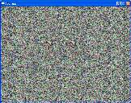
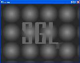
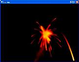

| | SGL - SIRD Graphics LibarySGL is a simple SIRD graphics engine. It is essentialy a 2D sprite based graphics engine, however it uses hieght maps, instead of textures. Because of this it can render those height maps as SIRDS (using an adjustment of the algorithum above) in real time to allow for an easy to work with graphics engine that uses SIRDs as it's main rendering system. It is currently being developed, and numerous projects are being planned which will use it's easy to use interface to develop all sorts of SIRD based games and applications. The API itself is a stylish mix of OpenGL and SDL style API design, and allows for a great degree of flexibility. Below is a sample rendering using the default SIRD renderer and the height map grey scale renderer (which can be easily jumped between). The engine itself is being written in ANSI C++ using SDL and so can be ported to almost any platform. SGL Test
Standard SIRD Rendering
 |
Depth Rendering
 |
SGL.zip
Platform: Win32
Note: This is a VERY early
test build of the program.
|
|
Games Developed Using SGLSPong - A SIRD based Pong game, fun to people new at SIRD games
SRampage - The early stages of a SIRD based 'Diablo' style game
|
SIRDfireMy first application which actually created real-time SIRD images, was infact not really planned out and organized, infact the story goes that I was looking over an example from the internet on using SDL (Simple DirectMedia Layer, and excellent API if I might add) which demonstrated how to use palettes by rendering an ever changing 8 bit height map (matched to true colours through a palette). I realised how easy it would be to adapt the example to render the height maps as SIRDs. And thus SIRDfire was born as a surprisingly small hack of the original "fire" demo by David Ashley (who has no legal connection to this project, and whom I've never even met). Here are some screen shots of SIRDfire:
Normal:
 |
SIRDified:
 |
SIRDfire.zip
Platform: Windows
Note: Run and hit 'S' to see in SIRD mode.
|
SDL - Simple DirectMedia Layer - The API SIRDfire uses
Original 'fire' Demo - by David Ashley
|
|

{kind=link}
{kind=link}
{kind=link}